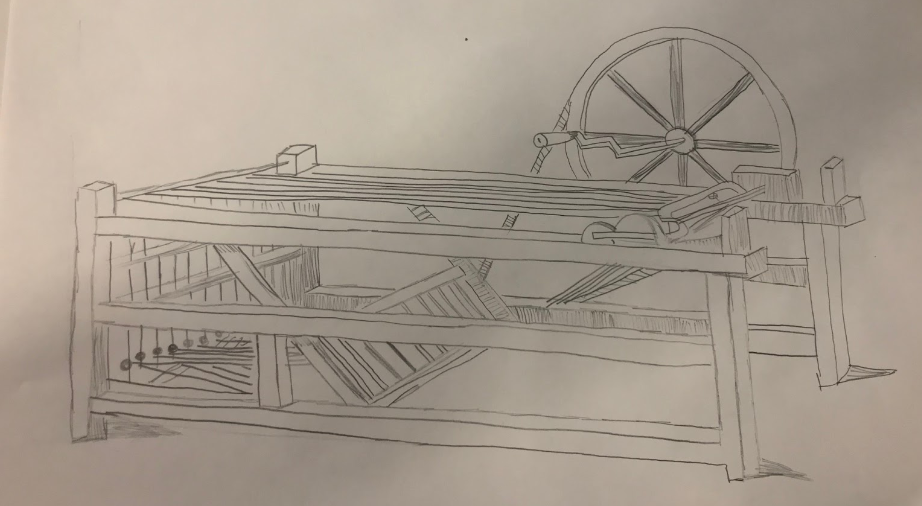
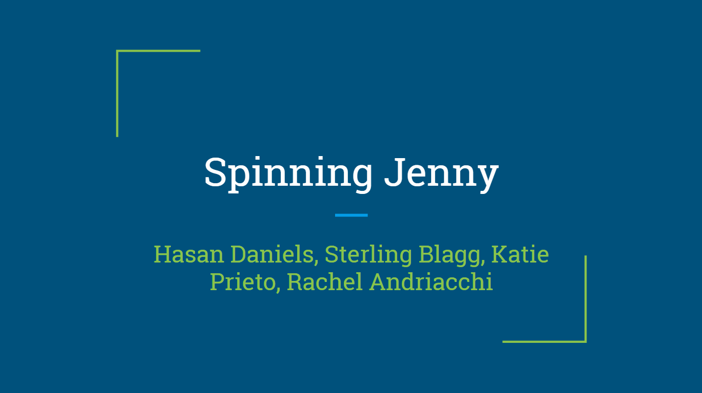

When viewing this page you will see the the projects we did in Daramolas class for the Timely Solution Project. In Daramolas class we were currently learning about industrial revolution inventions.

This was our sketch for the industrial revolution invention Daramola assigned us to research and build a model of.
This was the finished product of our model for the industrial revolution invention my group and I got assigned. The Spinning Jenny is a machine that uses an eight-spindled wheel that spins multiple threads at a time.
